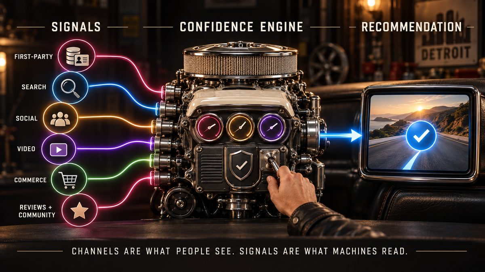
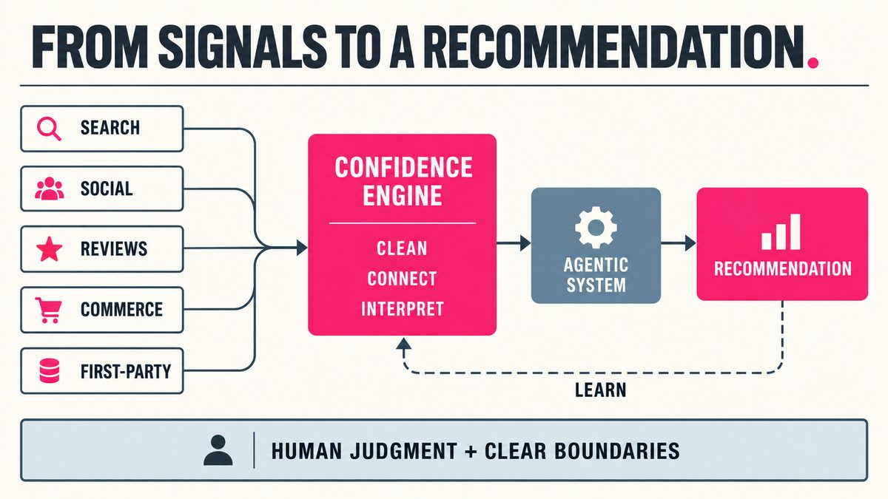
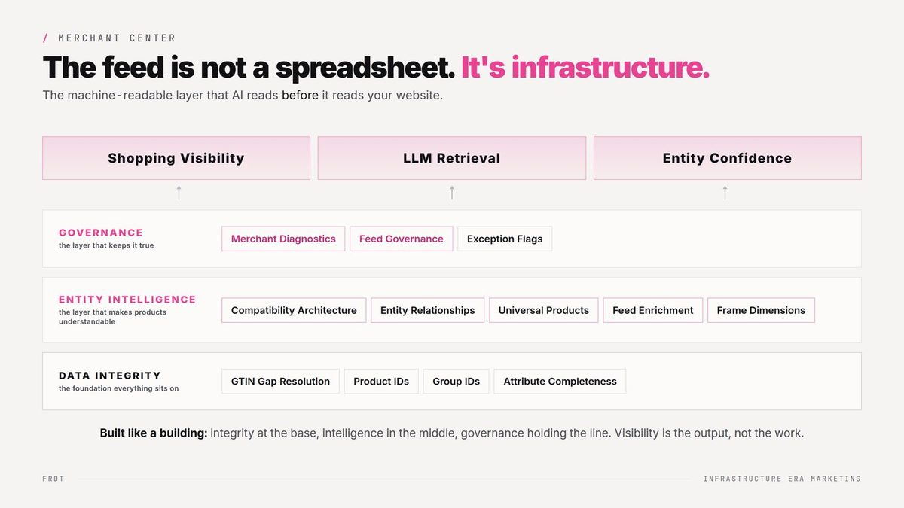

AI Search Visibility · Field Guide
AI search visibility: how to get recommended by AI.
Your buyers are asking ChatGPT, Perplexity, Gemini, Copilot, and Google's AI Overviews who to trust. Those answers name one or two brands. Here's what decides which ones, how to track your AI visibility, and what to fix first.

The tension
You can rank on page one and still be missing from the answer.
A brand has solid SEO, healthy traffic, good reviews. Then a prospect says, "ChatGPT suggested your competitor." Nobody saw it coming, because no dashboard reports the recommendation you didn't get.
Here's the lesson I keep relearning: AI doesn't rank pages. It weighs confidence. An AI-powered search engine is deciding whether it's safe to say your name. That decision is built from what the web agrees is true about you.
The action is simpler than the hype suggests. Get your facts straight everywhere, make them machine-readable, earn outside proof, and measure the answers on a schedule.
Definition
What AI search visibility means.
AI search visibility is how often, and how accurately, AI answer engines name, describe, and cite your brand when people ask questions in your category.
FRDTLAB · plain-English definition
It shows up in three ways, and they are worth separating:
- AI mentions. Your brand is named in the answer. This is the recommendation itself.
- Citations. Your page is linked as a source. You can be cited without being recommended, and recommended without being cited.
- Accuracy. What the answer says about you: price, location, what you sell, who you serve. Wrong facts are a visibility problem too.
Traditional rankings measure a position in a list of links. AI search visibility is measured across a fixed set of prompts: how many answers include you, how many cite you, and how often you're named compared with competitors.
Where you appear
How AI search engines pick their sources.
Each AI platform works differently. Most combine what the model learned in training with a live web search, then pick sources they consider safe to repeat. Same question, different answers.
Worth a monthly spot check too: Claude, Meta AI, and marketplace shopping assistants.

What drives it
Six levers that decide your AI visibility.
No tricks here. These make a brand easy to read and low-risk to recommend. Work them roughly in order.
One brand, one story
Same name, category, and description on your site, Google Business Profile, LinkedIn, directories, and marketplaces. If machines see three versions of you, they hedge.
Prices, locations, offers
Old prices and retired products live on in AI answers. Make every published fact match.
Say it in schema
Organization, Product, LocalBusiness, FAQ, and Person markup tell machines what each page is about, without guessing.
The feed is infrastructure
For commerce, your Merchant Center feed is often the cleanest description of your catalog that exists. Gaps there show up everywhere.
Outside proof
Reviews, press, podcasts, partner pages, and community threads. AI engines trust what others say about you more than what you say.
Answer first, readable always
Pages that answer the real question in the first lines, render without heavy scripts, and aren't blocked for crawlers like OAI-SearchBot, PerplexityBot, and Bingbot.

This is where the work gets real. On live client work, rebuilding the feed took product disapprovals from 43% to ~4% and feed quality score from 28 to 59. One catalog went from 28.51% to 83.43% search visibility in a single quarter, April to June 2026. That came from cleaner inputs every engine reads, not more spend.
That's integrated search in practice. Organic, paid, Shopping, local, and AI answers draw on the same facts. Fix them once and every channel gets the benefit.
Measurement
How to track AI search visibility without guessing.
AI visibility tracking starts with a prompt set: 25 to 50 questions your buyers actually ask an assistant. Run the same set on the same platforms on a schedule. Answers vary from run to run, so run priority prompts more than once and track the trend, not a single screenshot.
Prompt templates to start with
What's the best [category] for [use case] in [city or market]?
What is [your brand] and who is it for?
[Your brand] vs [competitor]: which is better for [need]?
Who are the top [category] companies for [audience]?
How much does [product or service] cost from [your brand]?
One honest limit: GA4 reports AI Overview clicks as regular Google organic, so pair referral data with your prompt results. If you aren't sure your analytics sees the full picture, the Analytics Coverage Calculator shows how much of your real revenue it can see. To see how findings get reported, look at the sample report.
The first 30 days
A step-by-step plan to boost AI search visibility.
Baseline
Write the prompt set and run it on every platform. Log mentions, citations, accuracy, and who gets named instead. Pull 90 days of AI referrals from GA4.
Fix the facts
Write one canonical brand fact sheet: name, category, locations, prices, founders, proof. Update your site, Google Business Profile, LinkedIn, and top directories to match it.
Make it machine-readable
Add or repair Organization, Product, LocalBusiness, and FAQ schema. Clear feed errors and fill missing attributes. Check robots.txt and Bing Webmaster Tools so the crawlers you want can reach you.
Earn proof, answer the gaps
Write answer-first pages for prompts where you were missing. Ask happy customers for reviews. Pitch one credible outside mention. Re-run the prompt set against week 1.
After that, run the loop monthly: measure, fix, track, repeat. Engines that search live, like Perplexity, can reflect fixes within weeks. Anything that depends on model training moves slower, so judge progress by the quarter. The full playbook lives in the GEO Playbook, and the thinking behind it is on the frameworks page.
Tools, compared honestly
AI visibility tools: what they can and can't tell you.
The category is young. No tool sees the real prompts people type, because the platforms don't share that data. Every tool samples answers to prompts you choose, so your prompt set matters more than your tool.
What to compare: which AI platforms are covered, whether you control the prompts, citation and source detail, competitor tracking, how often prompts re-run, and exports you can put in your own reporting. Pricing: it varies by number of prompts, platforms, and seats, and changes often, so check each vendor directly.
Common mistakes
Where brands lose AI visibility without noticing.
- Buying a tool before writing the prompts. The dashboard fills up, and none of it reflects how your buyers ask.
- Chasing citations and ignoring accuracy. Being named with the wrong price or a retired product costs you more than not being named.
- Treating it as a one-time fix. Models update, competitors publish, facts drift. Visibility you don't measure decays quietly.
- Forgetting Bing. Copilot and several other assistants lean on Bing's index. Plenty of sites have never verified in Bing Webmaster Tools.
- Reading one answer as the score. A single screenshot is an anecdote. A prompt set run on a schedule is evidence.
Want it done with you?
Find out what AI actually says about your brand.
The AI Visibility Audit runs your real buyer questions across ChatGPT, Perplexity, Gemini, and Google AI Overviews, then hands you a scored report with every fix ranked by impact.
Fixed price. One week from intake to report. If you start Advisory within 30 days, the full fee credits toward your first month. Want competitor benchmarking? That tier is $1,250.
Get the AI search visibility guide by email
This guide in your inbox, plus new field notes on AI search as the platforms change.
No spam. Unsubscribe any time.
FAQ
AI search visibility, answered.
What is AI search visibility?
How often, and how accurately, AI answer engines like Google AI Overviews, ChatGPT, Perplexity, Gemini, and Copilot name, describe, and cite your brand. It is measured in mentions, citations, and share of voice across a fixed prompt set, not in page rankings.
How do you track visibility in AI search?
Run a set of 25 to 50 real buyer questions across each AI platform on a schedule. Record mentions, citations, accuracy, and who is named instead, then add AI referral traffic from GA4. Repeat monthly.
How do you boost AI search visibility?
Make your brand easy to read and safe to recommend: consistent facts everywhere, clean structured data, accurate feeds, crawlable answer-first pages, and outside reviews and mentions that confirm your claims.
How is AI search visibility different from SEO rankings?
SEO earns a position in a list of links. AI search visibility earns a place inside one answer. Strong SEO helps, since many AI tools retrieve from search indexes, but it doesn't guarantee you get named.
Which tool is best for AI visibility tracking?
There is no single best tool. Pick on platform coverage, prompt control, citation detail, and exports. A manual prompt set plus GA4 works for a first baseline. Pricing varies, so check each vendor.
How long does it take to improve AI visibility?
Fixes can show up within weeks on engines that search the web live, like Perplexity and ChatGPT search. Changes that depend on model training take longer, so judge progress by the quarter.
Is there a free way to check my AI visibility?
Yes. Run your prompt set by hand, log the answers in a spreadsheet, and check GA4 for AI referral traffic. It gets hard to keep up at scale, which is when a tool or an audit earns its cost.
Be the answer
The machine is already describing you. Make sure it gets it right.
One week to see exactly where you stand, and what to fix first.